茨城県牛久市 ・ JR「牛久駅」より徒歩15分 ・ 駐車場完備
なかの循環器クリニック
一般内科 ・ 一般外科 ・ 循環器内科 ・ 禁煙外来
一般内科、外科診療のほか、各種循環器疾患（各種心臓病、血管疾患、不整脈、血栓症、高血圧、リンパ系疾患など）に対し専門的な観点から診療を行っています。
患者様の立場に立った優しい診療を心がけ、常に患者様と共に考え、共に歩めるような心身ともに癒されるクリニックを目指しています。
お知らせ
- 診療時間変更のお知らせ 院長学会出席の為、11月14日（土）11:15までの受付とさせていただきます。当日の混雑状況によっては受付時間に変更がある場合がございます。
- R8年度インフルエンザ予防接種について 9/28（月）から電話予約・ネット予約開始、接種開始は10/5（月）からです。当院では完全予約制です。中学生以上からの接種となります。予約受付時間帯 9:00〜12:00、14:00〜18:00。
- 受付時間変更のお知らせ R8/12/1〜受付終了時間が変更になります。午前11:30／午後5:30までに変更させていただきます。
- 発熱されている患者さまへのお願い 有熱の患者さんは、事前に当院にお電話下さい。診察待ち時間が1〜2時間になる場合があります。
- 施設基準や加算等に関するお知らせ 一般名処方加算・明細書発行体制等加算・医療情報取得加算（オンライン資格確認による薬剤情報等の取得・活用）に対応しています。
クリニックのコンセプト
当院は一般内科、外科診療のほか、各種循環器疾患（各種心臓病、血管疾患、不整脈、血栓症、高血圧、リンパ系疾患など）に対し専門的な観点から診療を行っています。
患者様の立場に立った優しい診療を心がけ、常に患者様と共に考え、共に歩めるような心身ともに癒されるクリニックを目指しています。
※当院での手術はNCD（National Clinical Database）に登録されています。
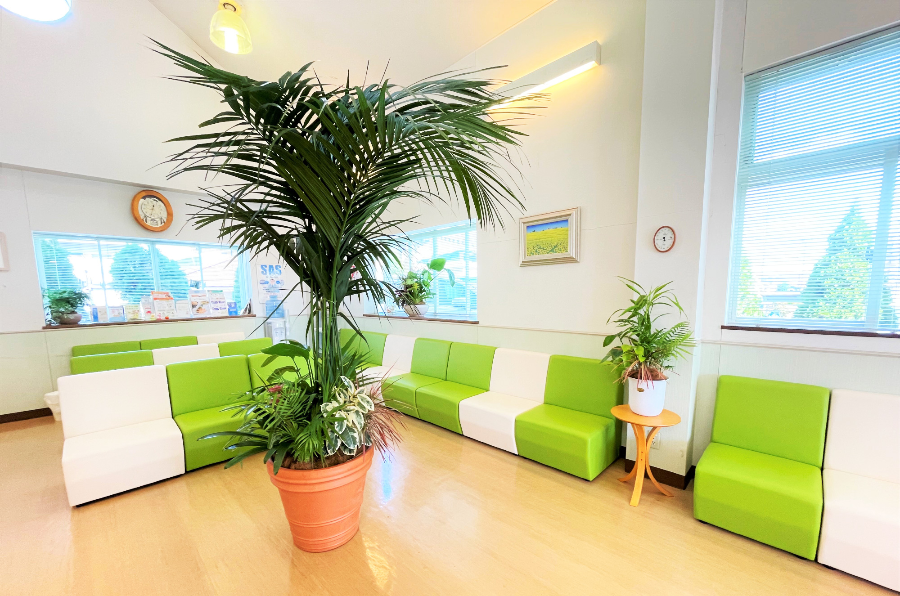
診療案内
このような症状や病気が心配な方はご相談ください。
一般内科
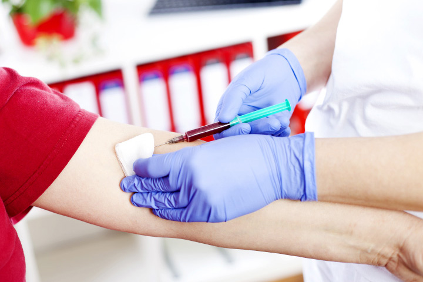
感冒、下痢、嘔吐、腹痛、喘息、アレルギーなど内科疾患全般、インフルエンザ等の予防接種、各種健康診断など。
一般外科
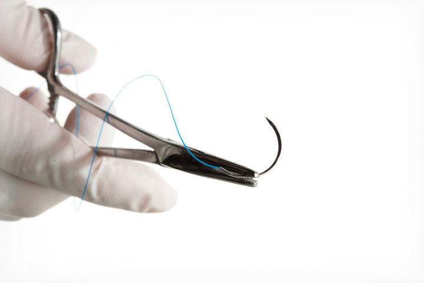
一般外科診療、各種外傷に対する処置全般。
循環器内科
- 高血圧外来：糖尿病、高脂血症など生活習慣病も含め診療いたします。
- 胸痛外来：動くと胸や肩、背中が痛くなる、夜中や朝方に胸が痛くなる方（狭心症、心筋梗塞など）。
- 心不全外来：動くと動悸や息切れがする、横になると息苦しい方（僧帽弁膜症、大動脈弁膜症、心筋症など）。
- むくみ外来：夕方になると靴がきつくなる、手足が腫れぼったい方（深部静脈血栓症、静脈瘤、リンパ浮腫、腎疾患など）。
- 血管外来：歩くと足が痛くなる、血管が浮き出ている、寒くなると指が白くなる方（バージャー病、閉塞性動脈硬化症、レイノー症候群、大動脈瘤など）。
- 不整脈外来：突然脈が乱れる、動悸を感じる、時々気が遠くなる方（期外収縮、発作性頻拍症、心房細動、徐脈発作、失神発作など）。
- ペースメーカー外来：定期的なペースメーカーチェック。電池消耗に対しまして日帰り手術でペースメーカー交換を行います。
- 睡眠時無呼吸外来（CPAP治療）：睡眠時無呼吸に対する簡易検査が可能です。CPAP管理も行っています。
禁煙外来
診察時間内でしたらいつでも受診可能ですので気軽にお申し出下さい。
紹介先病院
下記の医療機関と連携して地域医療を行っております。精密検査や入院などが必要な場合には症状に合せた病院をご紹介致します。希望に応じ、都内の病院もご紹介します。
診療時間
| 診療時間 | 月 | 火 | 水 | 木 | 金 | 土 | 日 |
|---|---|---|---|---|---|---|---|
| 9:00〜12:00 | ○ | ○ | ○ | ○ | ○ | ○ | × |
| 14:00〜18:00 | ○ | ○ | × | ○ | ○ | × | × |
- 休診日：水曜午後・土曜午後・日曜・祝日
- 受付終了時間：午前11:30／午後5:30まで（R8/12/1〜）
自費診療
予防接種
| 肺炎球菌（ニューモバックス） | 6,600円 |
|---|---|
| 帯状疱疹（不活化ワクチン・シングリックス） | 24,200円 |
| 水痘・帯状疱疹（生ワクチン・ビケン） | 8,100円 |
| 子宮頸がん（9価シルガード） | 28,000円 |
| 麻疹・風疹（MR） | 8,100円 |
| ムンプス | 6,100円 |
| 破傷風 | 2,100円 |
| A型肝炎 | 9,100円 |
| B型肝炎 | 7,100円 |
- 肺炎球菌・帯状疱疹・水痘帯状疱疹・子宮頸がん・麻疹風疹・ムンプスは年齢によっては助成制度あり
- ワクチン取り寄せに1週間ほどかかりますので事前にお電話でご予約お願いします。
健康診断・各種証明書
健康診断（平日のみ）を予約制で行っております。ご希望の方は当院までお問い合わせください。書類出来上がりまで1週間ほどかかりますのでご注意下さい。
| 診断書 | 3,300円 |
|---|---|
| 証明書 | 2,200円 |
| 治癒証明書 | 3,300円 |
| 障害年金診断書 | 6,600円 |
| 身体障害者診断書 | 6,600円 |
| 弾性ストッキング（1足(2本)/箱） | 3,000円台〜 |
各種診断書・証明書等は各1通につきの料金です。
医師紹介
院長からのあいさつ
地域のかかりつけ医として
院長・医学博士 中野 秀昭
これまで20年以上にわたり、全国有数の循環器専門病院、総合病院で外科、内科にかかわらず循環器治療の最前線に携わってまいりました。
今後はその経験を生かし、時には専門的な観点から、また時には地域に根ざしたプライマリーケア医の観点から、患者さんと共に考え、患者さんの親身になった心温まる医療をご提供申し上げたいと思っております。どうぞよろしくお願い申し上げます。
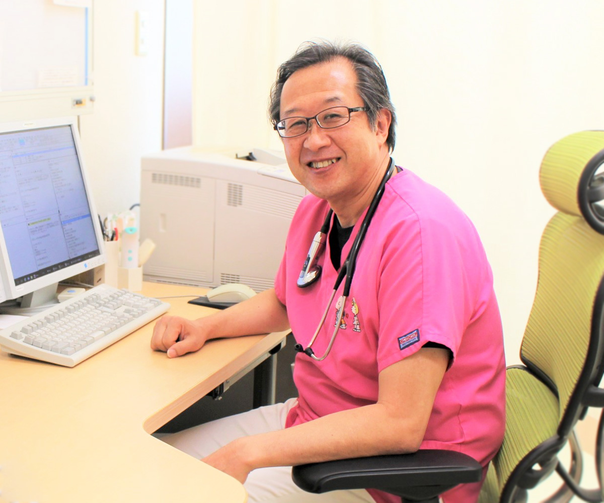
プロフィール
| 1985年 | 東京医科大学卒業、東京女子医科大学日本心臓血圧研究所入局 |
|---|---|
| 1986年 | 府中医王病院（東京）へ出向 |
| 1988年 | 榊原記念病院（東京）へ出向 |
| 1990年 | 綾瀬循環器病院（東京）へ出向 |
| 1991年 | 福山循環器病院（広島）心臓血管外科医長、シアトル・ワシントン大学で研修 |
| 1995年 | 仙台循環器センター（宮城）心臓血管外科医長 |
| 1997年 | 上尾中央総合病院（埼玉）循環器外科部長、東京女子医科大学循環器外科派遣講師 |
| 1998年 | 岡村記念病院（静岡）循環器外科部長、クリーブランドクリニックで研修 |
| 2001年 | 東京医科大学霞ヶ浦病院外科学第4講座心臓血管外科助教授、東京女子医科大学循環器外科非常勤講師兼務 |
| 2006年 | なかの循環器クリニック院長 |
資格
- 医学博士
- 日本外科学会認定医・日本外科学会認定の外科専門医
- 日本循環器学会専門医
- 日本胸部外科学会認定医 指導医
- ドクターオブドクターズ（T-PEC）登録医
- 身体障害者福祉法指定医（心臓部門）
経験心臓血管外科症例数
弁膜症に対する弁置換術、形成術、冠動脈バイパス術（心拍動下バイパス術を含む）、胸部または腹部大動脈瘤手術、各種不整脈手術、末梢血管バイパス術、静脈瘤手術、ペースメーカー植え込み術など2,500例以上。心臓カテーテル検査、PTCAなど500例以上。
院内紹介
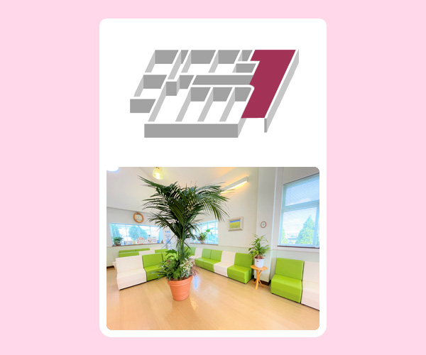
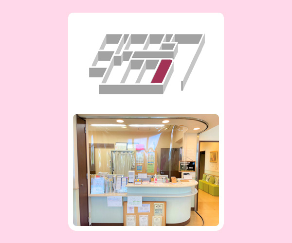
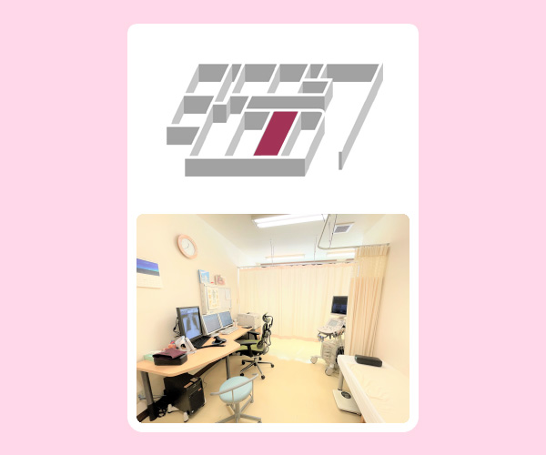
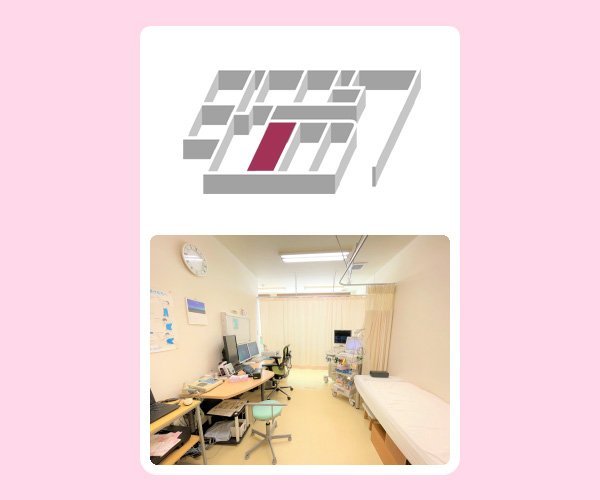
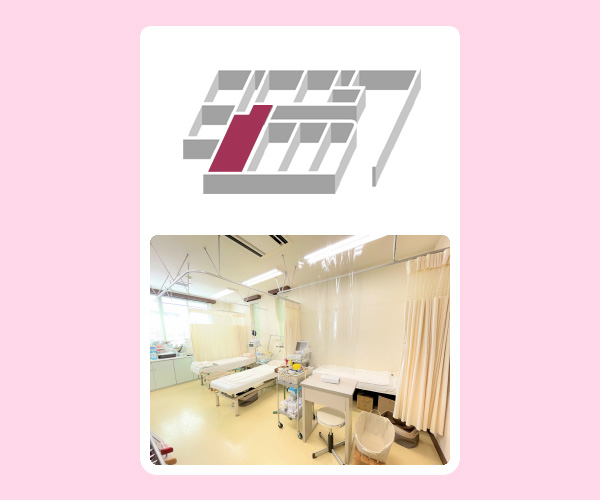
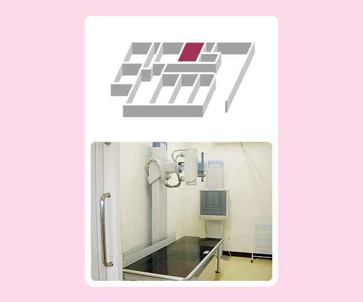
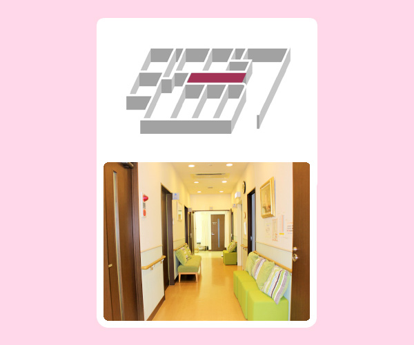
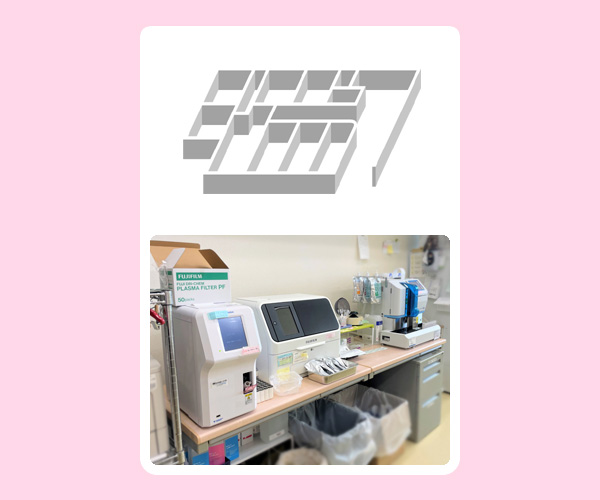
院内医療機器
- レントゲン撮影装置
- 心臓超音波検査装置
- 心電計・ホルター心電計・イベントレコーダー
- 各種血液検査装置
- 血圧脈波検査装置
- 動脈血酸素飽和度測定装置
- 心電図モニター
- スパイロメーター
- 微量点滴ポンプ
- 電子カルテシステム
当院の医療機器のデータはオンライン化され、全てネットワークでつながっております
上記の各種検査機器のデータはオンライン化され自動的に保存されます。また個人情報保護、診療記録保存、待ち時間短縮の観点からも推奨されています。
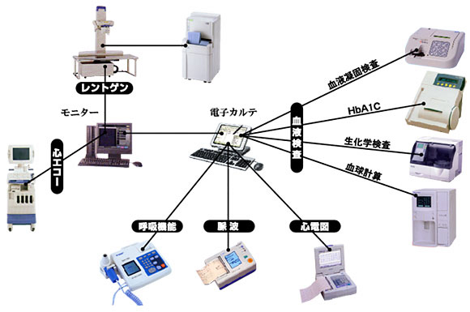
Ｑ＆Ａ
朝日新聞、読売新聞、毎日新聞を中心に毎週土曜日に折込まれている"常陽リビング"に、当院院長によるQ&Aコーナーが掲載されています。
下肢静脈瘤
ふくらはぎに青い血管が浮き出て、夕方になるとむくみが出る。治療法は？
治療法は、①弾性ストッキングの着用、②硬化（注射）療法、③手術の3種類です。静脈瘤の程度や障害血管の種類によって治療方法は異なり、長時間の立ち仕事や運動で悪化するため生活指導を含めた総合的な治療が大切となります。
高血圧の薬物治療
高血圧は1種類だけのお薬で治療することはできないのでしょうか。
高血圧の治療は生活習慣の改善はもちろん、多くの場合で薬物治療が必要です。基礎疾患の有無や1日の血圧上昇パターンを十分理解したうえで、薬剤の利点を最大限に考慮した投薬を行う必要があります。
気管支喘息と不整脈
喘息治療中に脈が速くなったり抜けたりします。薬の副作用でしょうか。
気管支拡張剤などは心臓を直接刺激する作用もあり、不整脈を自覚する場合があります。24時間心電図（ホルター心電図）や心臓超音波検査で、薬の副作用か病状に起因するものなのかを総合的に判断する必要があります。
心房細動
健診で心房細動という心電図異常を指摘されました。心房細動とは何でしょうか。
心房内で電気信号がさまざまな方向に広がり、心房が一定のリズムで収縮しない状態です。心房内に血栓が作られやすく脳梗塞の原因となります。治療は抗血栓治療（ワーファリン）が中心で、専門医にご相談下さい。
抗血栓薬ワーファリンについて
ワーファリンにはどのような食事の制限があるのでしょうか。
ビタミンKを多く含んだ食材で効果が減弱します。特に納豆やクロレラは摂取しないで下さい。月に一度の血液検査で服用量が決まります。出血傾向の副作用がありますので、歯ぐきからの出血や青あざなどを認めた場合はご相談下さい。
仮面高血圧
病院では正常なのに家で測ると血圧が高い。治療は必要でしょうか。
病院以外での血圧が高い場合「仮面高血圧」の可能性があります。脳梗塞や心筋梗塞の危険性が高いといわれています。朝食前・夕食前の血圧を記録し、循環器専門医にご相談下さい。
冬になると指が白く変色する（レイノー症候群）
冷水や冬になると指先が白く変色して痺れ痛みます。
手指や足趾の動脈が寒冷刺激などから一過性に収縮した状態です。原因疾患の同定と治療が大切です。患肢の保温や禁煙といった生活指導もきわめて重要ですので、心臓血管外科医や循環器専門医にご相談下さい。
高血圧の減塩療法
毎日の食事の塩分を制限するように言われています。どうしたらよいですか。
高血圧治療のためには1日7gまでの制限が必要とされています。加工品を控え、味噌汁は1日1杯、カリウムを含んだ野菜や果物を摂取するなどが基本です。
歩行時のふくらはぎの痛み
歩いているとふくらはぎが痛くなり、休むと再び歩けます。
「間歇性跛行」という動脈狭窄に起因する症状かもしれません。放置すると悪化することがありますので、血管の病気も念頭に、一度専門医にご相談してみて下さい。
頻度の少ない動悸
時々動悸を感じますが、ほんの1〜2分で治まります。
不整脈の可能性があります。ホルター心電図（24時間記録）とイベントレコーダー（1週間ほどお貸し出し）で不整脈の種類を判別し、治療の必要性を検討します。
アクセス
- クリニック名
- なかの循環器クリニック
- 住所
- 〒300-1234 茨城県牛久市中央1-21-3
- 車でお越しの方
- 駐車場完備。陸橋からは駐車場に入ることができません。地図上にある矢印の通り、側道へお回り下さい。
- 電車でお越しの方
- JR「牛久駅」より徒歩15分
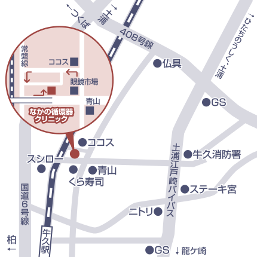